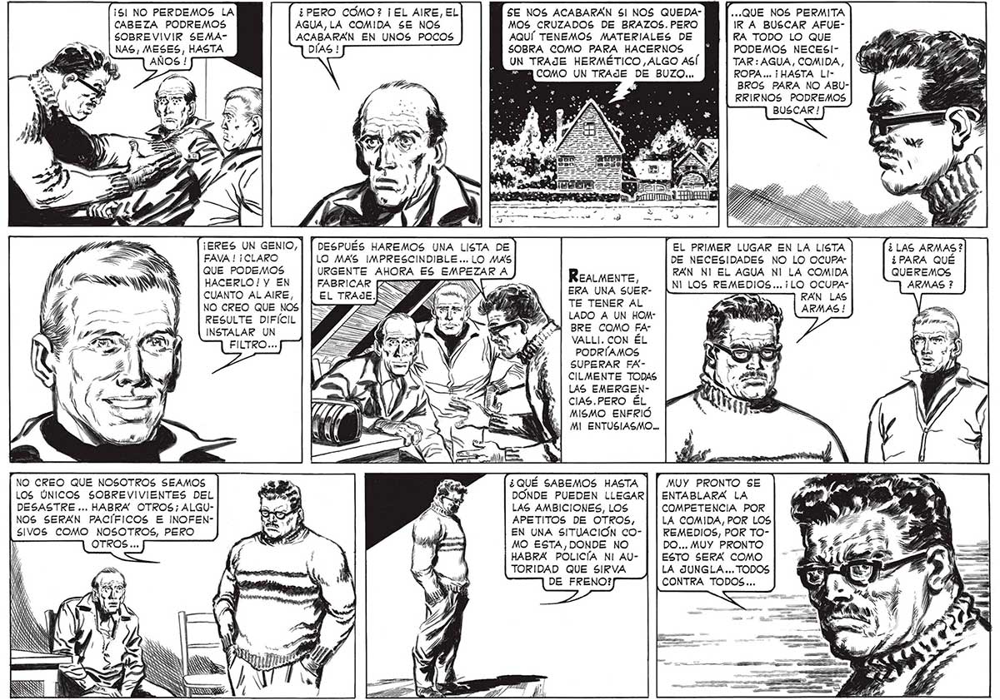

¡5l NO PERDEMOS LA CABEZA PODREMOS SOBREVIVIR SEMAÁ¿PERO COMO? ¡EL AIRE, EL AGUA,LA COMIDA SE NOS ACABARÁN EN UNOS POCOS SE NOS ACABARÁN 5 NOS QUEDAMOS CRUZADOS DE BRAZOS. PERO AQUÍ TENEMOS MATERIALES DE SOBRA COMO PARA HACERNOS UN TRAJE HERMÉTICO ALGO ASÍ ...QUE NOS PERMITA IRA BUSCAR AFUEKA TODO LO QUE PODEMOS NECESITAR : AGUA, COMIDA, 29 ROPA ... ¡HASTA LlBROS PARA NO ABURRIRNOS PODREMOS BUSCAR ! 3 COMO UN TRAJE DE BUZO... E de 0 Y ES a ES fr « , y A ¡ERES UN GENIO, FAVA ! ¡CLARO QUE PODEMOS HACERLO! Y EN CUANTO AL AIRE, NO CREO QUE NOS RESULTE DIFÍCIL INSTALAR UN FILTRO... DESPUÉS HAREMOS UNA LISTA DE LO MAS IMPRESCINDIBLE... LO MAS URGENTE AHORA ES EMPEZAR A EL PRIMER LUGAR EN LA LISTA DE NECESIDADES NO LO OCUPARÁN NI EL AGUA NI LA COMIDA NI LOS REMEDIOS... ¡LO OCUPA” ¿LAS ARMAS? ¿PARA QUÉ ReALMmenTE, QUEREMOS ERA UNA SUERTE TENER AL LADO A UN HOMBRE COMO FAVALLI. CON ÉL PODRÍAMOS SUPERAR FACILMENTE TODAS LAS EMERGENCIAS.PERO ÉL MISMO ENFRIÓ MI ENTUSIASMO... NO CREO QUE NOSOTROS SEAMOS LOS ÚNICOS SOBREVIVIENTES DEL DESASTRE ... HABRA” OTROS; ALGUNOS SERÁN PACÍFICOS E INOFENSIVOS COMO NOSOTROS, PERO 7 Ñ | ¿QUÉ SABEMOS HASTA DONDE PUEDEN LLEGAR LAS AMBICIONES, LOS APETITOS DE OTROS, EN UNA SITUACION COMO ESTA,DONDE NO HABRA POLICÍA NI AUTORIDAD QUE SIRVA 187 MUY PRONTO SE ENTABLARA LA COMPETENCIA POR LA COMIDA, POR LOS REMEDIOS, POR TODO... MUY PRONTO ESTO SERA COMO LA JUNGLA ... TODOS CONTRA TODOS...
